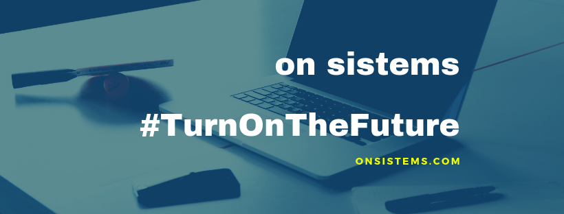

Sobre Nosotros
Qué pasa si juntas a un matemático que conoce el mundo web y que sabe algo de PHP y a un administrador de sistema, que saber montar y desmontar cualquier unidad con los ojos cerrados.
Pues de tal explosiva mezcla nace on sistems, una nueva forma de entender el mundo web y el hardware que hace que todo se mueva.
Trabajamos siempre con las ultimas herramientas (Full Stack) para el desarrollo de aplicaciones web adaptables para todos los dispositivos; y para acceder a lo mejor que puede ofrecer el mundo web, on sistems te construye el mejor equipo que se adapta a tus necesidades, ya sea para que seas el mejor gamer o para crear la mejor herramienta para tu trabajo u ocio; pero vamos más allá y te ayudamos a mejorar tu velocidad de internet para que no te pierdas ningún byte de datos.